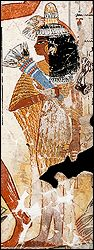

Nebamun's wife
Nebamun's wife

Nebamun's wife is dressed as though she is going to a banquet. She wears jewellery around her neck and arms, as well as a cone of perfumed wax on her head.
People wanted to be shown in wall reliefs wearing their best clothing and jewellery because they believed that it would help them to have those things in the afterlife.
Back...